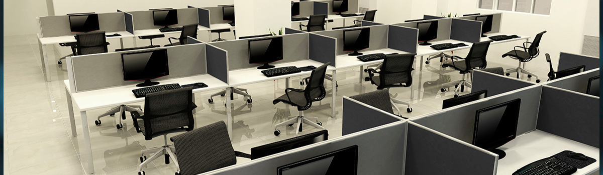
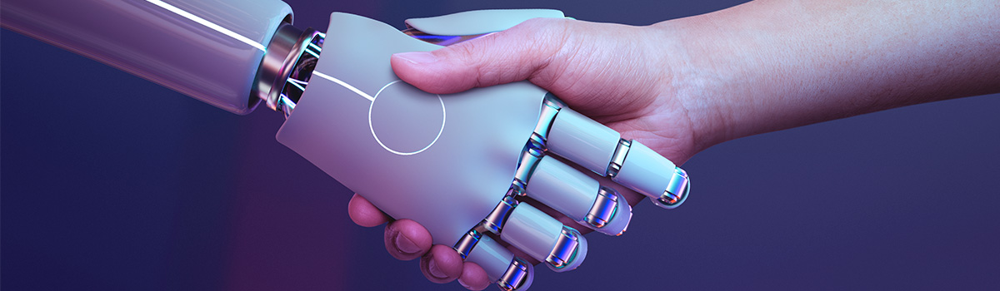

Sobre o Colégio Dr. Mário
Localizado no coração de Barracão - PR, nosso colégio é um farol de aprendizado e crescimento. Na Avenida Paraná, 247, Centro, CEP 85700-000, encontrará um ambiente educacional que prioriza a qualidade e a inovação.
Nossa oferta educacional abrange diversas etapas:
- Explorando Fundamentos:
Começamos com um sólido Ensino Fundamental, criando bases robustas para o desenvolvimento contínuo dos nossos alunos.
- Elevando Horizontes:
O Ensino Médio no Colégio Dr. Mário é mais do que aulas. É uma jornada rumo à excelência, com professores dedicados e especializados, comprometidos em guiar nossos alunos pelo caminho do conhecimento.
- Técnico e Pronto:
Preparamos nossos alunos para o futuro através do Ensino Médio Técnico. Focado em áreas de alta demanda no mercado de trabalho, esse programa proporciona habilidades práticas e conhecimentos sólidos, tornando nossos graduados altamente competitivos.
- Despertando Talentos:
Acreditamos que cada aluno é único. Nosso Programa Altas Habilidades é um viveiro de talentos especiais, proporcionando um ambiente propício para o florescimento das habilidades individuais de cada estudante.
- Excelência Docente:
Nossos educadores não são apenas professores, são mentores comprometidos com a jornada de aprendizado dos alunos. Com expertise em suas áreas, eles nutrem uma paixão pelo ensino que se reflete no sucesso dos nossos formandos.
No Colégio Dr. Mário, não apenas transmitimos conhecimento, mas também moldamos caráter, incutimos curiosidade e fomentamos a sede de aprendizado. Estamos dedicados a cultivar não apenas alunos bem informados, mas cidadãos preparados para enfrentar os desafios do mundo com confiança e competência.
Nossos Cursos
Ensino Fundamental
Preparamos os alunos para os desafios da vida acadêmica, fornecendo uma base sólida de conhecimentos.
Ensino Médio
Oferecemos um currículo diversificado e estimulante, visando à preparação para o ingresso nas melhores universidades.
Ensino Médio Técnico
Proporcionamos formação profissional de qualidade, preparando os estudantes para o mercado de trabalho.
Destaque: Nosso ensino médio técnico é reconhecido pela excelência e oferece oportunidades para os alunos se especializarem em áreas de alta demanda.
Projetos dos Alunos
Altas Habilidades
A Sala de Recursos Multifuncional - Tipo I para Altas Habilidades/Superdotação é um espaço organizado com materiais didático-pedagógicos, equipamentos e profissional(is) especializado(s) onde é ofertado o atendimento educacional especializado que visa atender às necessidades educacionais dos alunos público alvo da Educação Especial no Colégio Dr. Mário A. de Freitas.
Sala de Recursos
A Sala de Recursos Multifuncionais atenderá estudantes matriculados em instituições de ensino vinculadas ao Sistema Estadual de Ensino, com diagnóstico de deficiência intelectual, deficiência física neuromotora, transtornos globais do desenvolvimento, transtornos funcionais específicos, com problemas de aprendizagem, que requeiram análise e planejamento de ações de intervenção sobre os resultados avaliativos dos estudantes.
Edutech
É uma iniciativa da Secretaria de Estado da Educação do Paraná (Seed-PR), que visa a formação de estudantes na área de tecnologia e inovação para o desenvolvimento de projetos significativos à comunidade, oportunizando o protagonismo do estudante na aplicação de estratégias para resolução de problemas, nas suas práticas escolares e vivências pessoais. O objetivo do Edutech é capacitar jovens em tecnologia, sobretudo em conteúdos de programação, por meio da Plataforma Alura, contemplando o Pensamento Computacional, a Cultura e o Letramento Digital dos estudantes do Ensino Fundamental e Médio, que estão cada vez mais conectados e imersos em tecnologias digitais.
Robótica Paraná
O Programa Robótica Paraná, lançado em agosto de 2021, é uma iniciativa da Secretaria de Estado da Educação e do Esporte do Paraná (SEED), para ofertar a estudantes do Ensino Médio da rede pública estadual, aulas de robótica, bem como conteúdos de automação, física, linguagem de programação, conceitos de IoT (internet das coisas), domótica – área relativa à integração de mecanismos tecnológicos em uma residência e resolução de situações que oferecem na prática a vivência com a tecnologia. Considerando que a área de Tecnologia sempre está com seu foco voltado ao futuro e que é necessário preparar os estudantes paranaenses para as profissões do futuro, a SEED vem buscando ofertar cursos, tais como o de robótica, por meio dos quais os estudantes possam ter boas oportunidades de emprego e melhor qualidade de vida. Por meio do Programa a SEED disponibilizou às instituições de ensino da rede pública estadual kits de robótica e notebooks para instrumentalizar a aprendizagem, bem como aulas e projetos disponíveis no site: https://aluno.escoladigital.pr.gov.br/robotica. Colégio Dr. Mário A. T. de Freitas: Forjando Excelência, Liberando Potencial! Do Ensino Fundamental ao Técnico, somos o farol educacional de Barracão - PR. Nossos educadores dedicados, programas de destaque e ambiente inovador moldam alunos para um futuro brilhante. Junte-se a nós nessa jornada emocionante de aprendizado e crescimento.
Entre em Contato
Para mais informações sobre matrículas ou para agendar uma visita, entre em contato conosco:
Endereço: Avenida Paraná, 247, Centro, Barracão - PR, CEP 85700-000
Telefone: (49) 99866-1159
E-mail: contato@colegiodrmario.com